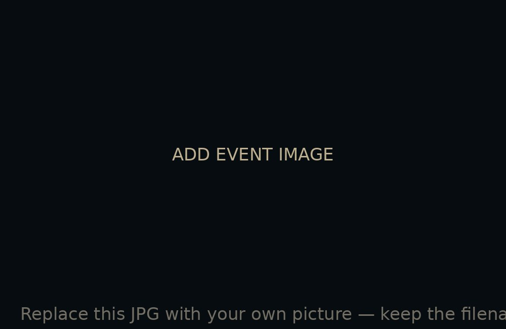

ADD EVENT IMAGE
ADD EVENT IMAGE
An Heir Is Named
King Viserys I names his daughter Rhaenyra his heir, breaking with a council's earlier ruling that a son should always inherit over a daughter — a decision half the court quietly never accepts.
VIEW DETAILS ↗ ADD EVENT IMAGE
ADD EVENT IMAGE
A Second Marriage, A Second Family
Viserys marries Alicent Hightower, who bears him three children of her own. For the next two decades, two competing households quietly compete for a throne that can only go to one line.
VIEW DETAILS ↗ ADD EVENT IMAGE
ADD EVENT IMAGE
The King Dies
Viserys I dies. His final words are misheard — or reinterpreted — and by the time Rhaenyra learns her father is gone, Alicent's son has already been crowned in the throne room.
VIEW DETAILS ↗ ADD EVENT IMAGE
ADD EVENT IMAGE
Aegon Is Crowned
Team Green moves fast and decisively — Aegon II is crowned before word even reaches Dragonstone. Rhaenyra learns she's been passed over the same day she learns her father is dead.
VIEW DETAILS ↗ ADD EVENT IMAGE
ADD EVENT IMAGE
A Prince Falls From the Sky
Rhaenyra's young son Lucerys dies in a confrontation above Storm's End when Aemond's dragon, the far larger Vhagar, turns a tense standoff into the war's first death.
VIEW DETAILS ↗ ADD EVENT IMAGE
ADD EVENT IMAGE
Dragonseeds and Desperation
Both sides start searching for anyone with even a drop of Targaryen blood who might be able to claim one of the realm's several riderless dragons — a sign of how badly the war has already thinned both sides' ranks.
VIEW DETAILS ↗ ADD EVENT IMAGE
ADD EVENT IMAGE
The Battle Above the God's Eye
Three dragons meet in the air over a lake at once — one of the only times in the entire war that dragons fight each other directly rather than striking ground targets, and the losses are catastrophic on every side.
VIEW DETAILS ↗ ADD EVENT IMAGE
ADD EVENT IMAGE
King's Landing Falls
With the city's defenses broken and support collapsing, Rhaenyra finally takes the throne she was promised twenty-five years earlier — but by now, it's a much smaller victory than it should have been.
VIEW DETAILS ↗
ADD EVENT IMAGEThe War Turns Again
Rhaenyra's hold on the capital collapses almost as fast as it began. The war grinds on with both claimants' fortunes reversing violently, and the human cost climbing far past what either side started the war willing to pay.
VIEW DETAILS ↗ ADD EVENT IMAGE
ADD EVENT IMAGE
A Council Ends What Dragons Couldn't
With both claimants gone and most of the dragons dead, the war finally ends not with a decisive battle but with the surviving lords choosing Rhaenyra and Daemon's young son, Aegon III, as a compromise king — a dynasty that survives, but never quite the same.
VIEW DETAILS ↗